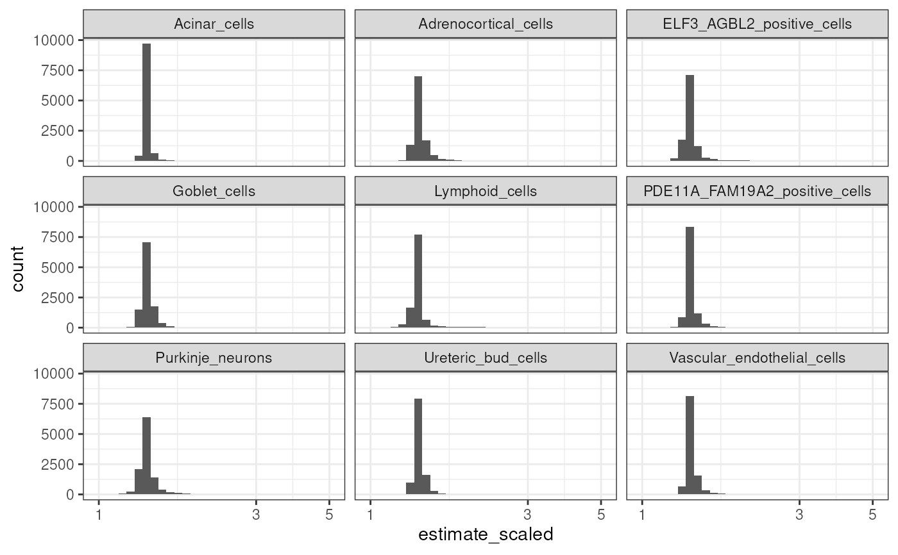

Plot the distributions of the test statistics in the phenotype-cell type association results.
plot_results_distributions(
results = load_example_results(),
x_var = "estimate",
facets = "CellType",
binwidth = NULL,
scales = "fixed",
log10_transform = TRUE,
show_plot = TRUE,
save_path = NULL,
...
)The cell type-phenotype enrichment results generated by gen_results and merged together with merge_results
Variable to plot on the x-axis.
A set of variables or expressions quoted by vars()
and defining faceting groups on the rows or columns dimension.
The variables can be named (the names are passed to labeller).
For compatibility with the classic interface, can also be a
formula or character vector. Use either a one sided formula, ~a + b,
or a character vector, c("a", "b").
The width of the bins. Can be specified as a numeric value
or as a function that takes x after scale transformation as input and
returns a single numeric value. When specifying a function along with a
grouping structure, the function will be called once per group.
The default is to use the number of bins in bins,
covering the range of the data. You should always override
this value, exploring multiple widths to find the best to illustrate the
stories in your data.
The bin width of a date variable is the number of days in each time; the bin width of a time variable is the number of seconds.
Should scales be fixed ("fixed", the default),
free ("free"), or free in one dimension ("free_x",
"free_y")?
log10 transform x_var.
Print the plot to the console.
Save the plot to a file.
Set to NULL to not save the plot.
Arguments passed on to KGExplorer::plot_save
heightHeight of the heatmap body.
widthWidth of the heatmap body.
results <- load_example_results()
ct <- unique(results$CellType)[seq(9)]
results <- results[CellType %in% ct]
results[,estimate_scaled:=scales::rescale(estimate,c(1,5))]
#> ctd model_id hpo_id
#> <char> <char> <char>
#> 1: DescartesHuman model10000_35c3c515a8691a HP:0040231
#> 2: DescartesHuman model10000_35c3c517ae4e97 HP:0040231
#> 3: DescartesHuman model10000_35c3c51910bcca HP:0040231
#> 4: DescartesHuman model10000_35c3c5198399fa HP:0040231
#> 5: DescartesHuman model10000_35c3c519a5a6ba HP:0040231
#> ---
#> 99122: DescartesHuman model9_2c043c59ba64f1 HP:0000010
#> 99123: DescartesHuman model9_2c043c6b131465 HP:0000010
#> 99124: DescartesHuman model9_2c043c718200ad HP:0000010
#> 99125: DescartesHuman model9_2c043c73838f9b HP:0000010
#> 99126: DescartesHuman model9_2c043c76b67e34 HP:0000010
#> CellType term estimate std.error statistic
#> <char> <char> <num> <num> <num>
#> 1: Lymphoid_cells x -0.006377201 0.01435295 -0.4443128
#> 2: Purkinje_neurons x -0.010869399 0.01435240 -0.7573229
#> 3: PDE11A_FAM19A2_positive_cells x -0.006265524 0.01435296 -0.4365317
#> 4: Vascular_endothelial_cells x -0.008501924 0.01435273 -0.5923560
#> 5: Adrenocortical_cells x -0.007390324 0.01435285 -0.5149027
#> ---
#> 99122: Vascular_endothelial_cells x 0.015853598 0.01435144 1.1046694
#> 99123: Ureteric_bud_cells x 0.002563779 0.01435320 0.1786208
#> 99124: Goblet_cells x -0.006553838 0.01435294 -0.4566200
#> 99125: ELF3_AGBL2_positive_cells x -0.006627750 0.01435293 -0.4617698
#> 99126: PDE11A_FAM19A2_positive_cells x -0.012463330 0.01435213 -0.8683958
#> p model_p model_q model_estimate model_statistic q
#> <num> <num> <int> <num> <num> <num>
#> 1: 0.6568363 1 1 2.834550e-16 1.975093e-14 0.9999989
#> 2: 0.4488932 1 1 2.834197e-16 1.974924e-14 0.9999989
#> 3: 0.6624704 1 1 2.837708e-16 1.977292e-14 0.9999989
#> 4: 0.5536398 1 1 2.843008e-16 1.981018e-14 0.9999989
#> 5: 0.6066444 1 1 2.842067e-16 1.980345e-14 0.9999989
#> ---
#> 99122: 0.2693576 1 1 9.662757e-17 6.733645e-15 0.9999989
#> 99123: 0.8582429 1 1 9.715655e-17 6.769679e-15 0.9999989
#> 99124: 0.6479646 1 1 9.717375e-17 6.771002e-15 0.9999989
#> 99125: 0.6442671 1 1 9.700381e-17 6.759163e-15 0.9999989
#> 99126: 0.3852206 1 1 9.663236e-17 6.733656e-15 0.9999989
#> annotLevel fold_change estimate_scaled
#> <int> <num> <num>
#> 1: 2 0.3823447 1.377781
#> 2: 2 0.3659512 1.353356
#> 3: 2 0.3827488 1.378389
#> 4: 2 0.3746244 1.366229
#> 5: 2 0.3786709 1.372273
#> ---
#> 99122: 2 0.4597372 1.498656
#> 99123: 2 0.4141946 1.426396
#> 99124: 2 0.3817051 1.376821
#> 99125: 2 0.3814374 1.376419
#> 99126: 2 0.3600692 1.344689
out <- plot_results_distributions(results, x_var="estimate_scaled")
#> `stat_bin()` using `bins = 30`. Pick better value `binwidth`.
